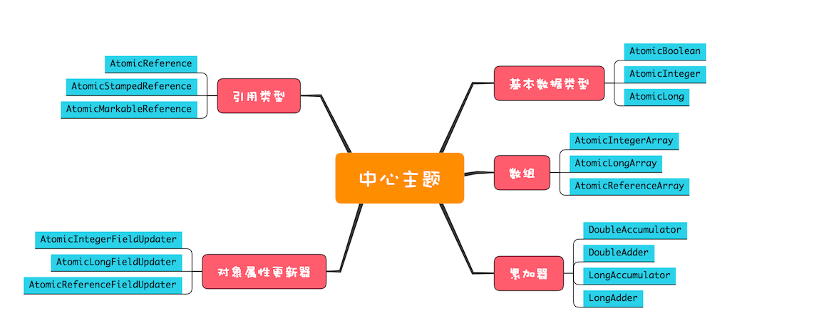

- 00 学习攻略 如何才能学好并发编程？.md.html
- 00 开篇词 你为什么需要学习并发编程？.md.html
- 01 可见性、原子性和有序性问题：并发编程Bug的源头.md.html
- 02 Java内存模型：看Java如何解决可见性和有序性问题.md.html
- 03 互斥锁（上）：解决原子性问题.md.html
- 04 互斥锁（下）：如何用一把锁保护多个资源？.md.html
- 05 一不小心就死锁了，怎么办？.md.html
- 06 用“等待-通知”机制优化循环等待.md.html
- 07 安全性、活跃性以及性能问题.md.html
- 08 管程：并发编程的万能钥匙.md.html
- 09 Java线程（上）：Java线程的生命周期.md.html
- 10 Java线程（中）：创建多少线程才是合适的？.md.html
- 11 Java线程（下）：为什么局部变量是线程安全的？.md.html
- 12 如何用面向对象思想写好并发程序？.md.html
- 13 理论基础模块热点问题答疑.md.html
- 14 Lock和Condition（上）：隐藏在并发包中的管程.md.html
- 15 Lock和Condition（下）：Dubbo如何用管程实现异步转同步？.md.html
- 16 Semaphore：如何快速实现一个限流器？.md.html
- 17 ReadWriteLock：如何快速实现一个完备的缓存？.md.html
- 18 StampedLock：有没有比读写锁更快的锁？.md.html
- 19 CountDownLatch和CyclicBarrier：如何让多线程步调一致？.md.html
- 20 并发容器：都有哪些“坑”需要我们填？.md.html
- 21 原子类：无锁工具类的典范.md.html
- 22 Executor与线程池：如何创建正确的线程池？.md.html
- 23 Future：如何用多线程实现最优的“烧水泡茶”程序？.md.html
- 24 CompletableFuture：异步编程没那么难.md.html
- 25 CompletionService：如何批量执行异步任务？.md.html
- 26 Fork_Join：单机版的MapReduce.md.html
- 27 并发工具类模块热点问题答疑.md.html
- 28 Immutability模式：如何利用不变性解决并发问题？.md.html
- 29 Copy-on-Write模式：不是延时策略的COW.md.html
- 3 个用户来信 打开一个新的并发世界.md.html
- 30 线程本地存储模式：没有共享，就没有伤害.md.html
- 31 Guarded Suspension模式：等待唤醒机制的规范实现.md.html
- 32 Balking模式：再谈线程安全的单例模式.md.html
- 33 Thread-Per-Message模式：最简单实用的分工方法.md.html
- 34 Worker Thread模式：如何避免重复创建线程？.md.html
- 35 两阶段终止模式：如何优雅地终止线程？.md.html
- 36 生产者-消费者模式：用流水线思想提高效率.md.html
- 37 设计模式模块热点问题答疑.md.html
- 38 案例分析（一）：高性能限流器Guava RateLimiter.md.html
- 39 案例分析（二）：高性能网络应用框架Netty.md.html
- 40 案例分析（三）：高性能队列Disruptor.md.html
- 41 案例分析（四）：高性能数据库连接池HiKariCP.md.html
- 42 Actor模型：面向对象原生的并发模型.md.html
- 43 软件事务内存：借鉴数据库的并发经验.md.html
- 44 协程：更轻量级的线程.md.html
- 45 CSP模型：Golang的主力队员.md.html
- 用户来信 真好，面试考到这些并发编程，我都答对了！.md.html
- 结束语 十年之后，初心依旧.md.html
- 捐赠
21 原子类：无锁工具类的典范
前面我们多次提到一个累加器的例子，示例代码如下。在这个例子中，add10K()这个方法不是线程安全的，问题就出在变量count的可见性和count+=1的原子性上。可见性问题可以用volatile来解决，而原子性问题我们前面一直都是采用的互斥锁方案。
public class Test {
long count = 0;
void add10K() {
int idx = 0;
while(idx++ < 10000) {
count += 1;
}
}
}
其实对于简单的原子性问题，还有一种无锁方案。Java SDK并发包将这种无锁方案封装提炼之后，实现了一系列的原子类。不过，在深入介绍原子类的实现之前，我们先看看如何利用原子类解决累加器问题，这样你会对原子类有个初步的认识。
在下面的代码中，我们将原来的long型变量count替换为了原子类AtomicLong，原来的 count +=1 替换成了 count.getAndIncrement()，仅需要这两处简单的改动就能使add10K()方法变成线程安全的，原子类的使用还是挺简单的。
public class Test {
AtomicLong count =
new AtomicLong(0);
void add10K() {
int idx = 0;
while(idx++ < 10000) {
count.getAndIncrement();
}
}
}
无锁方案相对互斥锁方案，最大的好处就是性能。互斥锁方案为了保证互斥性，需要执行加锁、解锁操作，而加锁、解锁操作本身就消耗性能；同时拿不到锁的线程还会进入阻塞状态，进而触发线程切换，线程切换对性能的消耗也很大。 相比之下，无锁方案则完全没有加锁、解锁的性能消耗，同时还能保证互斥性，既解决了问题，又没有带来新的问题，可谓绝佳方案。那它是如何做到的呢？
无锁方案的实现原理
其实原子类性能高的秘密很简单，硬件支持而已。CPU为了解决并发问题，提供了CAS指令（CAS，全称是Compare And Swap，即“比较并交换”）。CAS指令包含3个参数：共享变量的内存地址A、用于比较的值B和共享变量的新值C；并且只有当内存中地址A处的值等于B时，才能将内存中地址A处的值更新为新值C。作为一条CPU指令，CAS指令本身是能够保证原子性的。
你可以通过下面CAS指令的模拟代码来理解CAS的工作原理。在下面的模拟程序中有两个参数，一个是期望值expect，另一个是需要写入的新值newValue，只有当目前count的值和期望值expect相等时，才会将count更新为newValue。
class SimulatedCAS{
int count；
synchronized int cas(
int expect, int newValue){
// 读目前count的值
int curValue = count;
// 比较目前count值是否==期望值
if(curValue == expect){
// 如果是，则更新count的值
count = newValue;
}
// 返回写入前的值
return curValue;
}
}
你仔细地再次思考一下这句话，“只有当目前count的值和期望值expect相等时，才会将count更新为newValue。”要怎么理解这句话呢？
对于前面提到的累加器的例子，count += 1 的一个核心问题是：基于内存中count的当前值A计算出来的count+=1为A+1，在将A+1写入内存的时候，很可能此时内存中count已经被其他线程更新过了，这样就会导致错误地覆盖其他线程写入的值（如果你觉得理解起来还有困难，建议你再重新看看《01 | 可见性、原子性和有序性问题：并发编程Bug的源头》）。也就是说，只有当内存中count的值等于期望值A时，才能将内存中count的值更新为计算结果A+1，这不就是CAS的语义吗！
使用CAS来解决并发问题，一般都会伴随着自旋，而所谓自旋，其实就是循环尝试。例如，实现一个线程安全的count += 1操作，“CAS+自旋”的实现方案如下所示，首先计算newValue = count+1，如果cas(count,newValue)返回的值不等于count，则意味着线程在执行完代码①处之后，执行代码②处之前，count的值被其他线程更新过。那此时该怎么处理呢？可以采用自旋方案，就像下面代码中展示的，可以重新读count最新的值来计算newValue并尝试再次更新，直到成功。
class SimulatedCAS{
volatile int count;
// 实现count+=1
addOne(){
do {
newValue = count+1; //①
}while(count !=
cas(count,newValue) //②
}
// 模拟实现CAS，仅用来帮助理解
synchronized int cas(
int expect, int newValue){
// 读目前count的值
int curValue = count;
// 比较目前count值是否==期望值
if(curValue == expect){
// 如果是，则更新count的值
count= newValue;
}
// 返回写入前的值
return curValue;
}
}
通过上面的示例代码，想必你已经发现了，CAS这种无锁方案，完全没有加锁、解锁操作，即便两个线程完全同时执行addOne()方法，也不会有线程被阻塞，所以相对于互斥锁方案来说，性能好了很多。
但是在CAS方案中，有一个问题可能会常被你忽略，那就是ABA的问题。什么是ABA问题呢？
前面我们提到“如果cas(count,newValue)返回的值不等于count，意味着线程在执行完代码①处之后，执行代码②处之前，count的值被其他线程更新过”，那如果cas(count,newValue)返回的值等于count，是否就能够认为count的值没有被其他线程更新过呢？显然不是的，假设count原本是A，线程T1在执行完代码①处之后，执行代码②处之前，有可能count被线程T2更新成了B，之后又被T3更新回了A，这样线程T1虽然看到的一直是A，但是其实已经被其他线程更新过了，这就是ABA问题。
可能大多数情况下我们并不关心ABA问题，例如数值的原子递增，但也不能所有情况下都不关心，例如原子化的更新对象很可能就需要关心ABA问题，因为两个A虽然相等，但是第二个A的属性可能已经发生变化了。所以在使用CAS方案的时候，一定要先check一下。
看Java如何实现原子化的count += 1
在本文开始部分，我们使用原子类AtomicLong的getAndIncrement()方法替代了count += 1，从而实现了线程安全。原子类AtomicLong的getAndIncrement()方法内部就是基于CAS实现的，下面我们来看看Java是如何使用CAS来实现原子化的count += 1的。
在Java 1.8版本中，getAndIncrement()方法会转调unsafe.getAndAddLong()方法。这里this和valueOffset两个参数可以唯一确定共享变量的内存地址。
final long getAndIncrement() {
return unsafe.getAndAddLong(
this, valueOffset, 1L);
}
unsafe.getAndAddLong()方法的源码如下，该方法首先会在内存中读取共享变量的值，之后循环调用compareAndSwapLong()方法来尝试设置共享变量的值，直到成功为止。compareAndSwapLong()是一个native方法，只有当内存中共享变量的值等于expected时，才会将共享变量的值更新为x，并且返回true；否则返回fasle。compareAndSwapLong的语义和CAS指令的语义的差别仅仅是返回值不同而已。
public final long getAndAddLong(
Object o, long offset, long delta){
long v;
do {
// 读取内存中的值
v = getLongVolatile(o, offset);
} while (!compareAndSwapLong(
o, offset, v, v + delta));
return v;
}
//原子性地将变量更新为x
//条件是内存中的值等于expected
//更新成功则返回true
native boolean compareAndSwapLong(
Object o, long offset,
long expected,
long x);
另外，需要你注意的是，getAndAddLong()方法的实现，基本上就是CAS使用的经典范例。所以请你再次体会下面这段抽象后的代码片段，它在很多无锁程序中经常出现。Java提供的原子类里面CAS一般被实现为compareAndSet()，compareAndSet()的语义和CAS指令的语义的差别仅仅是返回值不同而已，compareAndSet()里面如果更新成功，则会返回true，否则返回false。
do {
// 获取当前值
oldV = xxxx；
// 根据当前值计算新值
newV = ...oldV...
}while(!compareAndSet(oldV,newV);
原子类概览
Java SDK并发包里提供的原子类内容很丰富，我们可以将它们分为五个类别：原子化的基本数据类型、原子化的对象引用类型、原子化数组、原子化对象属性更新器和原子化的累加器。这五个类别提供的方法基本上是相似的，并且每个类别都有若干原子类，你可以通过下面的原子类组成概览图来获得一个全局的印象。下面我们详细解读这五个类别。

原子类组成概览图
1. 原子化的基本数据类型
相关实现有AtomicBoolean、AtomicInteger和AtomicLong，提供的方法主要有以下这些，详情你可以参考SDK的源代码，都很简单，这里就不详细介绍了。
getAndIncrement() //原子化i++
getAndDecrement() //原子化的i--
incrementAndGet() //原子化的++i
decrementAndGet() //原子化的--i
//当前值+=delta，返回+=前的值
getAndAdd(delta)
//当前值+=delta，返回+=后的值
addAndGet(delta)
//CAS操作，返回是否成功
compareAndSet(expect, update)
//以下四个方法
//新值可以通过传入func函数来计算
getAndUpdate(func)
updateAndGet(func)
getAndAccumulate(x,func)
accumulateAndGet(x,func)
2. 原子化的对象引用类型
相关实现有AtomicReference、AtomicStampedReference和AtomicMarkableReference，利用它们可以实现对象引用的原子化更新。AtomicReference提供的方法和原子化的基本数据类型差不多，这里不再赘述。不过需要注意的是，对象引用的更新需要重点关注ABA问题，AtomicStampedReference和AtomicMarkableReference这两个原子类可以解决ABA问题。
解决ABA问题的思路其实很简单，增加一个版本号维度就可以了，这个和我们在《18 | StampedLock：有没有比读写锁更快的锁？》介绍的乐观锁机制很类似，每次执行CAS操作，附加再更新一个版本号，只要保证版本号是递增的，那么即便A变成B之后再变回A，版本号也不会变回来（版本号递增的）。AtomicStampedReference实现的CAS方法就增加了版本号参数，方法签名如下：
boolean compareAndSet(
V expectedReference,
V newReference,
int expectedStamp,
int newStamp)
AtomicMarkableReference的实现机制则更简单，将版本号简化成了一个Boolean值，方法签名如下：
boolean compareAndSet(
V expectedReference,
V newReference,
boolean expectedMark,
boolean newMark)
3. 原子化数组
相关实现有AtomicIntegerArray、AtomicLongArray和AtomicReferenceArray，利用这些原子类，我们可以原子化地更新数组里面的每一个元素。这些类提供的方法和原子化的基本数据类型的区别仅仅是：每个方法多了一个数组的索引参数，所以这里也不再赘述了。
4. 原子化对象属性更新器
相关实现有AtomicIntegerFieldUpdater、AtomicLongFieldUpdater和AtomicReferenceFieldUpdater，利用它们可以原子化地更新对象的属性，这三个方法都是利用反射机制实现的，创建更新器的方法如下：
public static <U>
AtomicXXXFieldUpdater<U>
newUpdater(Class<U> tclass,
String fieldName)
需要注意的是，对象属性必须是volatile类型的，只有这样才能保证可见性；如果对象属性不是volatile类型的，newUpdater()方法会抛出IllegalArgumentException这个运行时异常。
你会发现newUpdater()的方法参数只有类的信息，没有对象的引用，而更新对象的属性，一定需要对象的引用，那这个参数是在哪里传入的呢？是在原子操作的方法参数中传入的。例如compareAndSet()这个原子操作，相比原子化的基本数据类型多了一个对象引用obj。原子化对象属性更新器相关的方法，相比原子化的基本数据类型仅仅是多了对象引用参数，所以这里也不再赘述了。
boolean compareAndSet(
T obj,
int expect,
int update)
5. 原子化的累加器
DoubleAccumulator、DoubleAdder、LongAccumulator和LongAdder，这四个类仅仅用来执行累加操作，相比原子化的基本数据类型，速度更快，但是不支持compareAndSet()方法。如果你仅仅需要累加操作，使用原子化的累加器性能会更好。
总结
无锁方案相对于互斥锁方案，优点非常多，首先性能好，其次是基本不会出现死锁问题（但可能出现饥饿和活锁问题，因为自旋会反复重试）。Java提供的原子类大部分都实现了compareAndSet()方法，基于compareAndSet()方法，你可以构建自己的无锁数据结构，但是建议你不要这样做，这个工作最好还是让大师们去完成，原因是无锁算法没你想象的那么简单。
Java提供的原子类能够解决一些简单的原子性问题，但你可能会发现，上面我们所有原子类的方法都是针对一个共享变量的，如果你需要解决多个变量的原子性问题，建议还是使用互斥锁方案。原子类虽好，但使用要慎之又慎。
课后思考
下面的示例代码是合理库存的原子化实现，仅实现了设置库存上限setUpper()方法，你觉得setUpper()方法的实现是否正确呢？
public class SafeWM {
class WMRange{
final int upper;
final int lower;
WMRange(int upper,int lower){
//省略构造函数实现
}
}
final AtomicReference<WMRange>
rf = new AtomicReference<>(
new WMRange(0,0)
);
// 设置库存上限
void setUpper(int v){
WMRange nr;
WMRange or = rf.get();
do{
// 检查参数合法性
if(v < or.lower){
throw new IllegalArgumentException();
}
nr = new
WMRange(v, or.lower);
}while(!rf.compareAndSet(or, nr));
}
}
欢迎在留言区与我分享你的想法，也欢迎你在留言区记录你的思考过程。感谢阅读，如果你觉得这篇文章对你有帮助的话，也欢迎把它分享给更多的朋友。
© 2019 - 2023 Liangliang Lee. Powered by gin and hexo-theme-book.